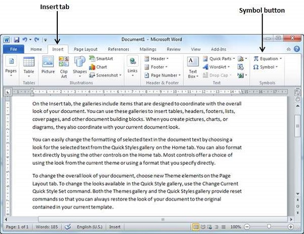
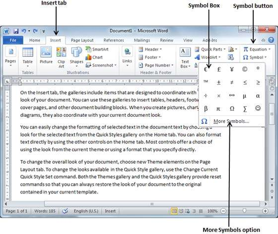
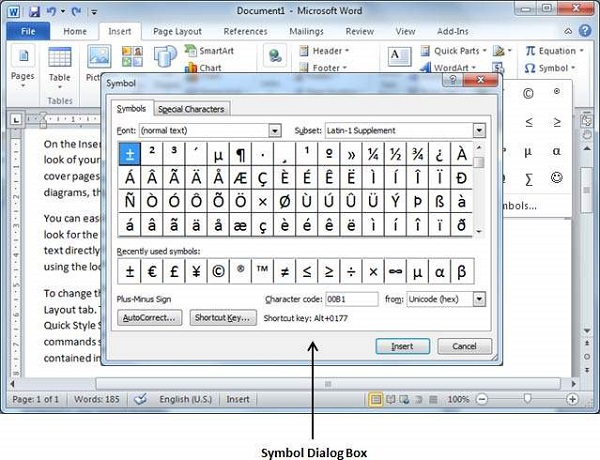
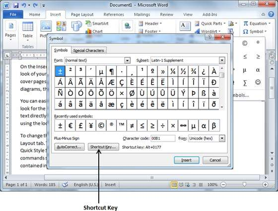
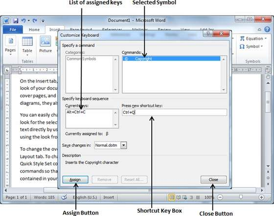

To insert symbols that are occasionally used, follow the steps in this section. If you find yourself using a particular symbol frequently, you can assign a keyboard shortcut to it.
Here is a simple procedure to apply zoom-in or zoom-out operation using the View tab −
Step 1 − To insert a special symbol, bring your cursor at the place where you want to insert the symbol. Click the Insert tab. You will find two options under the symbol button (a) Equation and (b) Symbols. Click either of these two options based on your requirement. You will further use equations while preparing mathematical or scientific or any similar document. For now, we are going to understand the use of the Symbol button as shown below.

Step 2 − When you click the Symbol button, a small list of symbols will appear as shown below.

Step 3 − Now click on any of the available symbols in the box to insert that in your document at the selected location. If you do not find the desired symbol in this small box, then you can click at the More Symbols option to have a wide range of symbols as shown below in the symbol dialog box. You can select any of the symbol and then click the Insert button to insert the selected symbol.

You can assign a keyboard shortcut to type any of the available symbol. Following are the steps to assign Ctrl + Q key to insert the © symbol which is one of the available symbols in the special symbols list −
Step 1 − Assume you already have the following symbol dialog box opened.

Step 2 − Click the symbol for which a shortcut key needs to be assigned. Now click Shortcut Key button which will display the following Customize Keyboard dialog box.

Step 3 − Now type the selected shortcut key in the shortcut key box. You press Ctrl + Q and then click the Assign button to assign the shortcut key. You will see that the selected key will be added in the list of assigned keys. Finally, use the Close button to close the dialog box.
Step 4 − Now try to type Ctrl + Q using the keyboard directly and you will find that you are able to type © symbol without going into the symbol dialog box.